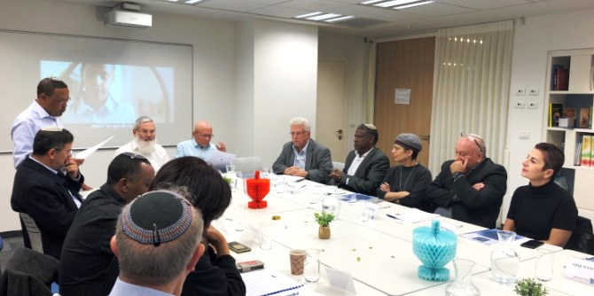
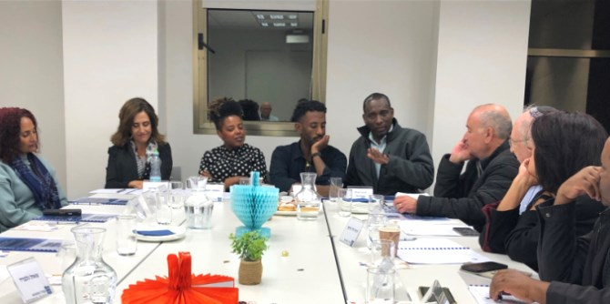
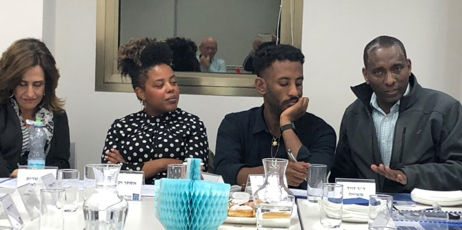
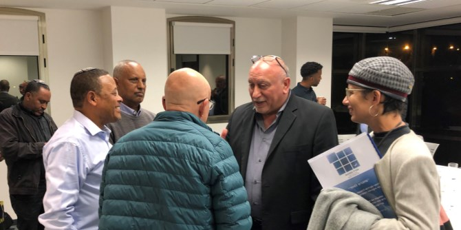

“Ready for Tomorrow” is an educational initiative of the National Movement for Equal Opportunities of Ethiopian Jewry, a non-profit organization founded by Yafet Alemu, a graduate of Cohort 11 of the Mandel School for Educational Leadership. On December 23, 2019, the Mandel Graduate unit held an event in partnership with Yafet, in which he presented this initiative, which is based on a vision that he developed as a Mandel fellow.

“Ready for Tomorrow” works to advance fundamental values of equality, justice, and social mobility via education and integration into the workforce. The initiative aims to promote, empower, and train youth and young adults from the Ethiopian-Israeli community and to prepare them for entering high-quality professions, mainly in the fields of health and medicine.
Yafet, who works as a nurse at Hadassah Medical Center in Jerusalem, is familiar with the severe lack of personnel in the medical and health professions in Israel, and is aware of the significant under-representation of Ethiopian-Israelis in these fields. He sees the existing situation not only as a challenge, but also as an opportunity to create change by training and guiding young Ethiopian-Israelis into these professions. This will help address the needs of the labor market while offering these young people the opportunity of high-quality professional employment, and improving the cultural accessibility of Israel’s health system for the Ethiopian community.

The Mandel Graduate Unit has supported Yafet throughout the process of developing his initiative. This has been done as part of the professional development support that the Unit provides Mandel graduates upon the completion of their studies, in order to bolster their ability to realize and implement their professional vision for the benefit of Israeli education and society.
Dr. Yehuda Maimaran, a graduate of Cohort 3 of the Mandel School for Educational Leadership and a consultant at the Mandel Graduate Unit, has served as a strategic consultant to Yafet throughout the establishment of the initiative. Dr. Maimaran spoke at the event about the initiative’s importance for advancing Ethiopian-Israeli youth and narrowing social gaps in the Ethiopian community. He also discussed the link between educational excellence and social responsibility.
The guests who attended the event at Yafet’s invitation included figures from the worlds of medicine, law, and academia, as well as leaders and entrepreneurs from the Ethiopian-Israeli community and other sectors of society. Dr. Yehezkel Caine, CEO of the Herzog Medical Center, spoke about the success of Herzog’s training programs in the nursing professions and the contribution of these programs to the Center and to the program participants. These programs enable participants to enter a profession that is a source of pride and steady income, with possibilities for advancement. Dr. Caine also noted that ”Ready for Tomorrow” is just one example of training for the health professions, and expressed support for the intention to expand the program to encompass all health and medical professions, in order to increase the participants’ freedom of choice.

Shaul Gelbard, CEO of Bank Yahav, said that ”Ready for Tomorrow” has the potential to grow even further and to include additional areas of education for excellence, such as technology, sport, finance, and more. Naftali Avraham, who was the CEO of Tech-Career until recently and is now CEO of the Ethiopian Jewry Heritage Center (a government corporation), presented a model for the initiative that focuses on a single discipline. He spoke about the success of the Center for Technology Training for Young Ethiopian Israelis and about the growing integration of these young people into the Israeli hi-tech industry: There has been a rise from four Ethiopian Israeli hi-tech employees in the year that Tech-Career was founded (2002), to hundreds of young Ethiopian-Israelis who are now working in hi-tech. (The Center successful placement rate is 89%.)
Dr. Simcha Getahune, chair of the National Institute for Ethiopian Jewry Heritage Center and former head of multi-cultural affairs at ELEM—Youth in Distress, spoke about the great motivation of young Ethiopian-Israelis to progress and develop, and of the need to give them a strong sense of belief and hope. Justice (ret.) Shlomo Shoham emphasized the importance of giving freedom of choice and a range of possibilities, and proposed focusing on the needs of the target audience rather than on goals.
Doron Haran, vice chairman for resource development at Ono Academic College, and Adv. Ze’ev Kasu, director of the program for Ethiopian Israelis at Ono College and treasurer of Yafet’s nonprofit, spoke about the success of Ethiopian-Israeli students at Ono College and about its pragmatic operational model, which provides a solid basis for success.

Two particularly moving speakers were Dr. Daniel Mashasha, a young member of the Ethiopian-Israeli community who recently completed his studies at the Hadassah Medical Center School of Medicine, and Esther Alemu Wexler, a film director who is highly regarded both in Israel and internationally. Daniel spoke of his special journey to become a doctor. Esther, who is Yafet’s daughter, showed a scene from a film that she directed that was based on her childhood experiences at school, and spoke of how her father supported her and encouraged her to reach her goals, stand up for her beliefs, and believe in herself.
Dr. Sarit Barzilai, an expert in narrative training who, like Yafet, is a graduate of Cohort 11 of the Mandel School for Educational Leadership, spoke about her longstanding friendship with Yafet and about his leadership qualities. Ayala Bavly, editing manager of the Mandel Graduate Unit, described the Unit and its partnership with Yafet, and moderated the discussion. More than 20 people attended the event, and the feedback that they gave will aid the continued development of the initiative.
{kind=link}
{kind=link}
{kind=link}
{kind=link}